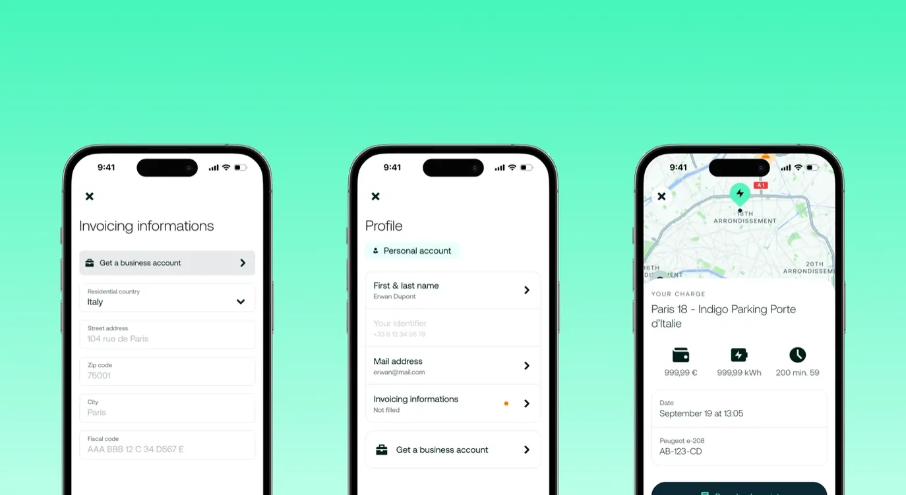
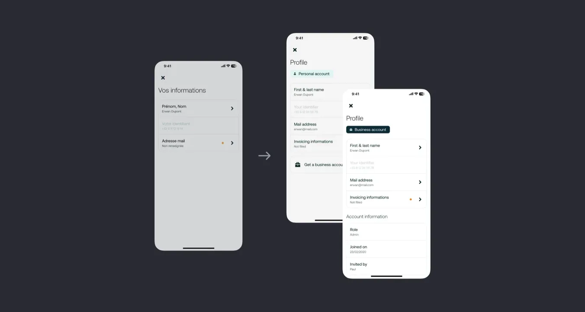
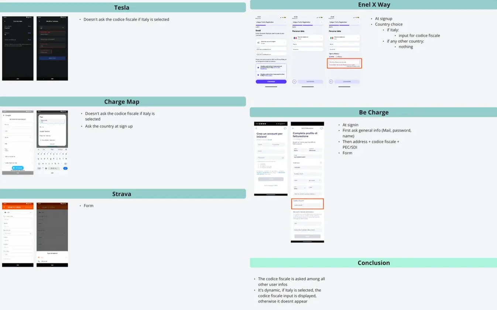
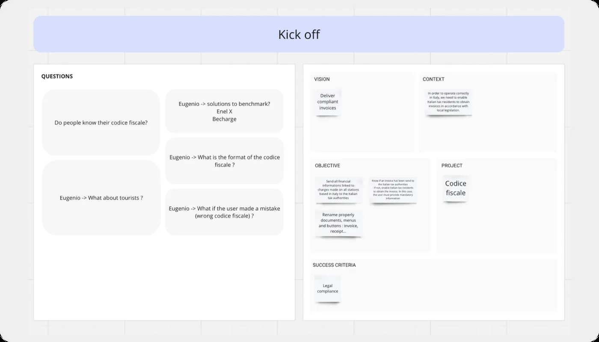

Codice
Fiscale
Une obligation légale transformée en prétexte pour réparer un modèle de compte qui n'avait jamais été pensé pour durer. Elle a ouvert le marché italien.
- Entreprise
- Electra
- Durée
- 2 mois
- Rôle
- Product Designer — avec les équipes juridique et italienne
- Périmètre
- Recherche utilisateur · Maquettes · UX & UI
- Environnement
- Mobile · App · B2C/B2B
Pas de code, pas de facture, pas de marché
Electra étendait son réseau en Italie. Une obligation légale bloquait la porte : le codice fiscale. Le droit fiscal italien le rend obligatoire pour tout service utilisé par un citoyen italien, et il doit être rattaché à chaque paiement pour que la facture soit valide.
Sans lui, les transactions ne respectent tout simplement pas les standards du pays. Il n'existait aucun contournement possible par le design — seulement une réponse de design.

Concevoir dans les règles d'un autre
Ce projet m'a mis en collaboration directe avec l'équipe juridique et l'équipe italienne. Naviguer dans des contraintes légales est déjà difficile ; le faire dans le cadre réglementaire d'un autre pays, sans être juriste, imposait de s'appuyer sur les spécialistes pour combler l'écart de connaissance avant de dessiner quoi que ce soit.
L'utilisateur ne reçoit sa facture que si le codice fiscale a été renseigné avant la demande. S'il le rate, il attend la recharge suivante. Réglementation fiscale italienne, totalement hors de notre contrôle — le design devait donc garantir que ce moment ne soit jamais raté.
Une décision de cadrage comptait : l'obligation ne s'applique qu'aux utilisateurs italiens rechargeant en Italie. Tous les autres ne doivent jamais voir cette étape. Cette contrainte a déterminé où le champ pouvait vivre.
Où les autres le demandent
Après le kick-off avec notre country manager italien, j'ai benchmarké les plateformes qui collectent déjà un code fiscal. Les questions étaient étroites et pratiques : à quel moment le demandent-elles, et comment est formaté le champ — saisie libre, guidée, gabarit pré-rempli ?
Le benchmark a fait remonter un second problème pour lequel je n'avais pas été briefé. Les utilisateurs professionnels doivent aussi fournir leur code avec les informations de leur société — et notre parcours B2B stockait tout ça dans un seul champ.
J'ai traité l'obligation légale comme une ouverture. Le profil de compte était ambigu bien avant l'Italie — on ne distinguait pas un compte personnel d'un compte professionnel. Éclater les données B2B en champs séparés était de toute façon nécessaire pour la facturation ; ça réglait aussi l'ambiguïté.
Trois portes, pas une
J'ai cartographié trois points d'entrée pour collecter le code : un pendant l'onboarding des nouveaux utilisateurs, et deux autres pour les utilisateurs existants devant le fournir plus tard. Concevoir pour les deux populations n'était pas optionnel — le réseau italien avait déjà des utilisateurs.
J'ai retiré le champ de l'inscription. Il sortait du périmètre central et allongeait le seul parcours où la friction coûte le plus cher. C'est la page profil qui le porte — avec un indicateur de statut et une pastille orange signalant qu'une action est attendue.


Design System, pas invention
Il y a eu peu d'itérations de design ici, et c'était le bon résultat. Une fonctionnalité imposée par la loi, avec des règles strictes, ne demande pas d'originalité — elle demande des champs, des formulaires, et une forte réutilisation des composants du Design System. Le travail était dans le routage, pas dans les pixels.
Le point de contact le plus critique s'est révélé ailleurs : dans l'historique de recharge et les factures, une bannière prévient que les informations de facturation manquent et renvoie directement à la page. C'est là qu'on réalise qu'on a besoin d'une facture — c'est donc là que le rappel doit se trouver.

Le marché italien s'est ouvert
Grâce au travail de ma squad et de la squad B2B, l'Italie est officiellement ouverte à Electra. L'obligation de conformité est remplie sans ajouter d'étape à l'inscription, et les utilisateurs italiens reçoivent des factures valides.
Ce qui reste, c'est le modèle de compte. Nous avons trouvé des manques structurels et une architecture technique qui n'était pas pensée pour durer, et repensé la logique de gestion de compte avec l'équipe B2B. Ce socle survivra à la fonctionnalité qui l'a déclenché.
Une contrainte légale est un brief où le « quoi » ne se négocie pas — ce qui libère toute l'attention pour le « où » et le « quand ». L'essentiel de la valeur ici vient d'avoir placé trois points de contact au bon endroit, pas d'avoir dessiné un formulaire.